YARDNOW
Yard Intelligence Platform
Business Requirements Document
System Documentation, User Stories, Workflows & Permission Matrix
React + TypeScript
Node.js / Express API
PostgreSQL (Neon)
Drizzle ORM
OpenAI GPT-5.1
Real-Time Operations
Table of Contents
1Executive Summary
10Compliance Modules
2Product Overview & Modes
11Analytics & Revenue
3System Architecture
12Administration Modules
4Sitemap & Navigation
13AI & Email Intelligence
5User Roles & Personas
14User Stories by Role
6Dashboard
15Core Operational Workflows
7Appointments Module
16Permission Matrix
8Gate Operations
17Product Mode Feature Matrix
9Yard Operations
18Glossary
YardNow is a production-grade Yard Management System (YMS) built for distribution centres, warehouses, and logistics hubs that need real-time control over inbound and outbound trailer movements. It replaces paper-based gate logs, whiteboards, and spreadsheets with a unified digital platform covering every stage of a trailer's lifecycle — from scheduled appointment through gate check-in, yard storage, dock assignment, unloading/loading, and final gate check-out.
The platform ships as a three-tier product (Core / Elevate / Enhanced) so customers can start with essential yard operations and progressively unlock AI-powered automation without re-implementing their workflows.
Business Objectives
- Reduce trailer dwell time by providing real-time slot and dock visibility
- Eliminate manual gate paperwork with structured digital check-in and printed gate passes
- Improve carrier compliance and on-time rates through appointment scheduling and late-arrival tracking
- Prevent costly demurrage charges with detention tracking and billing events
- Give management immediate operational visibility via a live dashboard and exportable reports
- Enable AI-assisted dispatch, email parsing, and predictive alerts for mature deployments
Scope
🚪
Gate Operations
Full inbound/outbound processing: multi-step check-in, identity verification, CDL/USDOT/SCAC capture, seal logging, reefer, BOL, trailer condition, and gate-pass printing.
🗺️
Yard Control
Interactive yard map, slot management across zones, live trailer inventory, aged-trailer alerts, and jockey move task orchestration.
🏭
Dock Management
Kanban dock board with SLA timers, drag-and-drop status updates, and scheduling calendar for all 10 dock doors.
📅
Appointments
Calendar and list views for scheduling inbound/outbound trailers, slot-conflict detection, and carrier notifications.
⚠️
Compliance
Hold and exception lifecycle management, structured inspection checklists with photo evidence, and periodic yard audits.
🤖
AI Intelligence
Streaming GPT-5.1 chat assistant, predictive congestion alerts, carrier email parsing, and automated exception flagging.
YardNow ships as a single codebase with three selectable product modes stored in localStorage (key: ymsnow_product_mode). The active mode is displayed in the top navigation bar and can be switched at any time by an Admin. Feature flags gate AI-only capabilities so that Core customers never see unactivated surfaces.
| Mode |
Description |
Key Differentiators |
Target Customer |
| Core |
Full manual yard operations. Every workflow is explicit and human-driven. No AI involvement in any decision. |
Gate ops, yard map, dock kanban, appointments, inspections, reports, audit log |
Small–mid DCs, compliance-sensitive facilities |
| Elevate |
Core operations plus AI copilot assist surfaces embedded in the key screens. |
Dashboard AI brief, dock/appointment assist panels, smart suggestions inline, AI chat |
Growing DCs wanting AI guidance without full automation |
| Enhanced |
Full AI orchestration layer — proactive alerts, email intelligence, predictive congestion, and revenue intelligence. |
All Elevate features + email parsing, ROI panel, automated exception creation, lifecycle video |
Enterprise DCs, 3PLs, high-volume cross-dock facilities |
Tablet Mode: All major pages support a 10-inch tablet layout activated by the Tablet button in the top bar or via URL parameter ?tablet=1. This optimises form grids, font sizes, and hit targets for handheld use at the gate or dock.
Frontend (Port 5000)
React 18 + TypeScript, Vite build, TailwindCSS + shadcn/ui components, TanStack Query for server state, Wouter for routing, Recharts for analytics visualisations, dnd-kit for drag-and-drop dock management.
API Server (Port 8080)
Node.js + Express, fully TypeScript. Drizzle ORM over PostgreSQL. All CRUD via REST endpoints under /api/*. Vite proxies frontend /api calls to port 8080. SSE streaming endpoint for AI chat at /api/assistant/chat.
Database (Neon PostgreSQL)
Serverless Neon PostgreSQL with auto-suspend. Production and development share the same schema (Drizzle migrations). 18 core tables. Connection pool configured with 15s timeout and 60s idle keepalive to handle endpoint wake-up.
| Layer | Technology | Key Libraries |
|---|
| Frontend UI | React 18, TypeScript, Vite 7 | shadcn/ui, TailwindCSS, Lucide Icons, Recharts, dnd-kit |
| State / Data | TanStack Query v5 | React Query, Axios-free (native fetch via apiRequest) |
| Routing | Wouter (lightweight React router) | RoleGuard HOC for per-route access control |
| Backend | Express 4, Node.js 20, tsx | cors, compression, zod validation |
| ORM / Database | Drizzle ORM, PostgreSQL 15 | pg driver, @neondatabase/serverless (production) |
| AI | OpenAI GPT-5.1 | Replit AI Integrations (managed key), SSE streaming |
| Deployment | Replit Cloud (pnpm monorepo) | Neon serverless DB, auto-HTTPS, custom domain support |
Monorepo Workspace Layout
| Package | Path | Purpose |
|---|
@workspace/yms | replit/artifacts/yms/ | React frontend application |
@workspace/api-server | replit/artifacts/api-server/ | Express REST API server |
@workspace/db | replit/lib/db/ | Drizzle schema, migrations, shared types |
@workspace/mockup-sandbox | replit/artifacts/mockup-sandbox/ | Isolated component preview server (Vite port 8081) |
Public / Pre-Auth
Carrier Portal
/portal
Carriers
Lifecycle Video
/video
Public
Dashboard
Dashboard
/
AdminManagerGuardJockeyDock
Operations
Appointments
/appointments
AdminManager
Gate Check-In
/gate/check-in
AdminManagerGuard
Gate Check-Out
/gate/check-out
AdminManagerGuard
Guard Mode
/gate/guard-mode
AdminManagerGuard
Yard Inventory
/yard/inventory
AdminManagerGuardJockeyDock
Yard Map
/yard/map
AdminManagerJockey
Dock Management
/dock
AdminManagerDock
Yard Moves
/moves
AdminManagerJockey
Compliance
Holds & Exceptions
/exceptions
AdminManager
Inspections
/inspections
AdminManagerGuardDock
Yard Audit
/yard/audit
AdminManager
Analytics
Reports & Analytics
/reports
AdminManager
Revenue Intelligence
/revenue
AdminManager
Notifications
/notifications
AdminManagerGuardJockeyDock
Administration
Carrier Management
/admin/carriers
AdminManager
Yard Setup
/admin/yard-setup
Admin only
User Management
/admin/users
Admin only
Audit Log
/admin/audit
AdminManager
Email Intelligence
/email-intelligence
AdminManagerEnhanced
AI Configuration
/admin/ai-config
Admin only
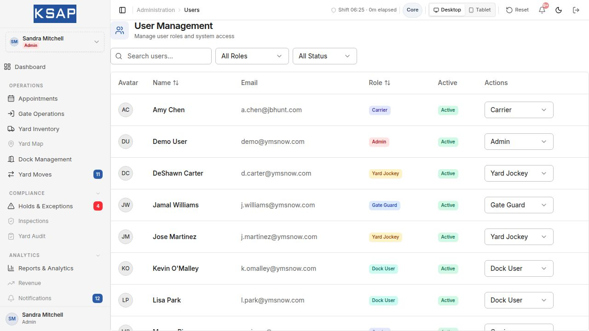
Fig 5.1 — User Management: role assignment and active status for all facility staff.
| Role |
Persona |
Primary Responsibilities |
System ID |
| Admin |
Yard Manager / IT Admin |
Full system access. Configures zones, dock doors, gates, users, AI settings. Resolves critical exceptions. Manages carriers and rate tables. |
admin |
| Yard Manager |
Operations Supervisor |
Monitors real-time yard state via dashboard and yard map. Approves exceptions. Manages appointments, reports, and carrier performance. |
yard_manager |
| Gate Guard |
Security / Gate Operator |
Processes inbound and outbound gate transactions. Verifies driver identity and credentials. Issues gate passes. Auto-redirected to Guard Mode on login. |
gate_guard |
| Yard Jockey |
Spotter / Switcher Driver |
Executes move tasks from the Yard Moves queue. Views yard map and slot positions to locate trailers. Updates move task status. |
yard_jockey |
| Dock User |
Dock Operator / Forklift Op |
Manages dock door status via the Kanban board. Records loading/unloading start and completion. Initiates inspections and flags damage. |
dock_user |
| Carrier |
Trucking Company Rep |
External portal access only. Views own appointment schedule and trailer status. Cannot access internal operational screens. |
carrier |
Demo Persona Roster (Seed Data)
| Name | Email | Role | Notes |
|---|
| Sandra Mitchell | s.mitchell@ymsnow.com | Admin | Default admin persona |
| Robert Chen | r.chen@ymsnow.com | Yard Manager | Operations supervisor |
| Maria Gonzalez | m.gonzalez@ymsnow.com | Gate Guard | Auto-routes to Guard Mode |
| Jamal Williams | j.williams@ymsnow.com | Gate Guard | Secondary guard |
| DeShawn Carter | d.carter@ymsnow.com | Yard Jockey | Primary spotter |
| Jose Martinez | j.martinez@ymsnow.com | Yard Jockey | Secondary spotter |
| Kevin O'Malley | k.omalley@ymsnow.com | Dock User | Dock operator |
| Lisa Park | l.park@ymsnow.com | Dock User | Dock operator |
Demo Credential: All personas share the PIN 12345 in the development/demo environment.
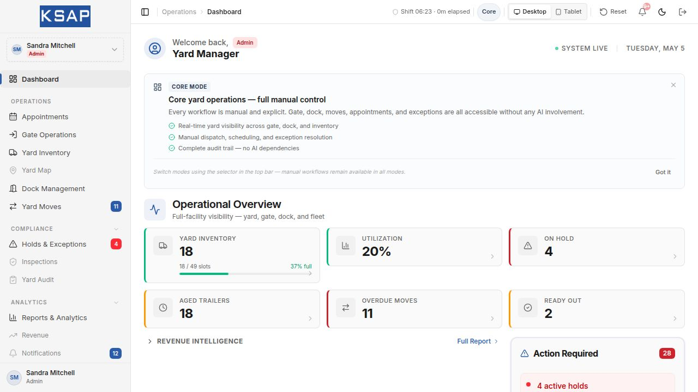
Fig 6.1 — Operational Dashboard: live KPIs, action-required panel, revenue intelligence snippet, and product-mode banner.
Purpose
The Dashboard is the home screen for all authenticated users. It provides an at-a-glance operational overview of the entire facility — current yard inventory count, dock utilisation %, active holds, aged trailers, overdue moves, and units ready for outbound departure. The content adapts based on the active product mode: Core shows manual metrics only; Elevate and Enhanced add an AI summary brief and ROI panel.
Key Components
- Operational Overview KPIs: Yard Inventory count, Utilisation %, On Hold count, Aged Trailers (24h+), Overdue Moves, Ready Out
- Revenue Intelligence Snippet: Collapse/expand section with today's revenue and pending billing events
- Action Required Panel: Prioritised list of items needing immediate attention (holds, escalated moves, unresolved exceptions)
- Product Mode Banner: Dismissable onboarding card describing the active tier's capabilities
- AI Assist Summary (Elevate/Enhanced): GPT-generated operational brief with top recommendations
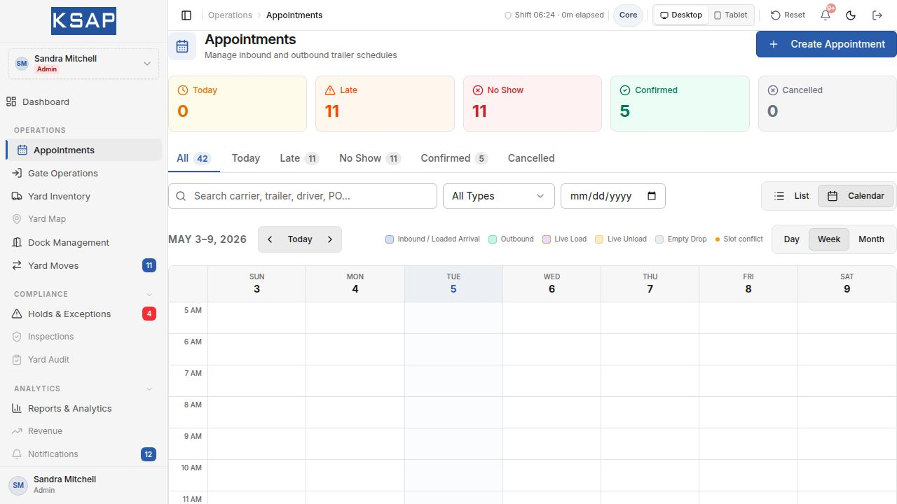
Fig 7.1 — Appointments: weekly calendar view with colour-coded movement types and slot-conflict detection.
Purpose
The Appointments module manages the full schedule of expected trailer arrivals and departures. Carriers and yard managers can create, edit, and cancel appointments. The system auto-detects slot conflicts and surfaces late or no-show appointments for exception handling.
Key Features
- Views: Calendar (Day / Week / Month) and List view with status filter tabs (All, Today, Late, No-Show, Confirmed, Cancelled)
- Movement Types: Inbound, Outbound, Empty Drop, Loaded Arrival, Live Load, Live Unload — each colour-coded on the calendar
- Slot Conflict Detection: Yellow dot indicator when two appointments share the same dock/slot window
- Status KPIs: Today, Late, No Show, Confirmed, Cancelled counts updated in real time
- Create Appointment: Form for reference #, carrier, trailer #, driver, time window, movement type
Status Lifecycle
| Status | Trigger | Next State |
|---|
| Scheduled | Appointment created | Confirmed, Cancelled |
| Confirmed | Carrier confirms via portal or manager confirms | Checked In (gate), No Show, Cancelled |
| Checked In | Gate check-in completed | Completed |
| Late | System detects arrival past time window end | Checked In (with exception), No Show |
| No Show | Manual flag or end-of-day automation | Cancelled |
| Cancelled | Manual cancellation | Terminal |
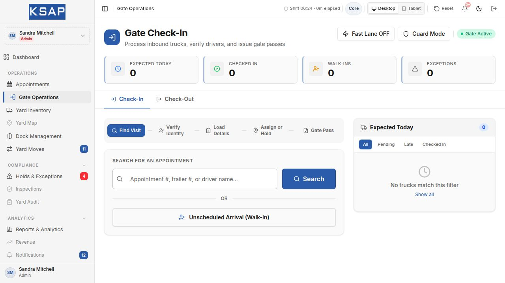
Fig 8.1 — Gate Check-In: 5-step process with search, identity verification, and load details capture.
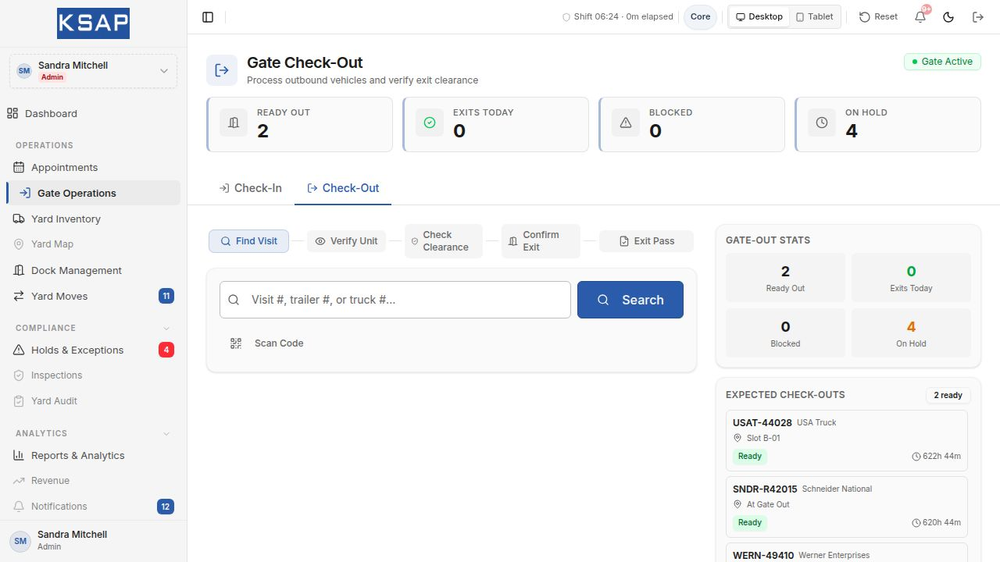
Fig 8.2 — Gate Check-Out: 4-step exit process with clearance check and exit pass.
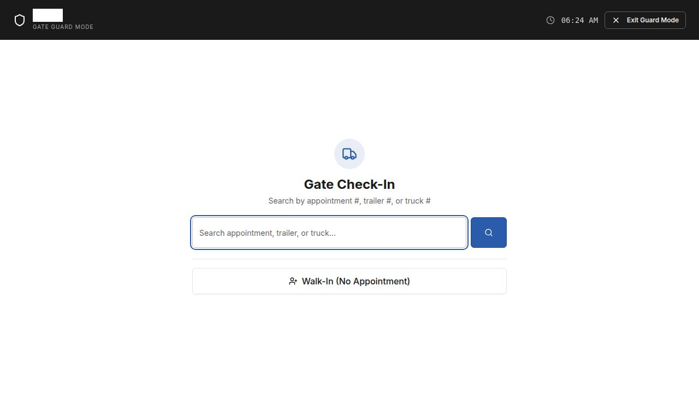
Fig 8.3 — Guard Mode: full-screen simplified interface optimised for gate kiosk stations.
Gate Check-In — 5-Step Process
1
Find Visit
Search by appointment #, trailer #, or driver name. Select from results or initiate an Unscheduled Arrival (Walk-In).
2
Verify Identity
Three sections: Driver Identity (name + CDL last 4), Carrier Credentials (USDOT + SCAC), Vehicle (truck # + trailer # with mismatch detection). Discrepancies auto-create exceptions.
3
Load Details
Five sections: Seal & Movement type, Special Conditions (Hazmat toggle + Reefer toggle with °F input), Trailer Condition (Good/Damaged/Needs Inspection), Documents (BOL PDF/JPG/PNG upload), and optional Gate Notes.
4
Assign or Hold
After successful check-in, assign trailer to available yard slot or place a hold (Documentation, Security, Damage, Seal Mismatch, Driver Issue, Customs).
✓
Gate Pass
Print official gate pass with visit number, carrier, driver, trailer/truck numbers, movement type, check-in time, and any supplemental data (USDOT, SCAC, reefer temp, condition, BOL). Guards and driver sign.
Gate Check-Out — 4-Step Process
1
Find Visit
Search by visit #, trailer #, or truck #. QR code scan available.
2
Verify Unit
Confirm trailer and truck numbers match the visit record. Check Ready Out status.
3
Check Clearance
System checks for active holds, pending inspections, and documentation status. Blocks exit if hold exists.
✓
Exit Pass
Mark visit as exited, generate exit pass, update yard inventory count. Triggers billing events for detention if applicable.
Special Features
| Feature | Description |
|---|
| Fast Lane Mode | Bypasses verification steps for known expected arrivals — guard clicks one truck from the right-panel list to instant-check-in. |
| Guard Mode | Full-screen black-themed kiosk interface. Auto-activated for gate_guard role on first login per session. Stripped of all navigation. |
| Duplicate Check | Real-time API call checks if trailer # is already checked in. Blocks re-entry with red badge and link to existing visit. |
| Late Arrival Detection | If appointment time window has passed, amber warning shown and a Late Arrival exception is auto-created on check-in submit. |
| Discrepancy Exceptions | If guard changes driver name, truck #, or trailer # from the appointment record, a Manual Modification exception is auto-created for supervisor review. |
| Expected Today Panel | Right-hand side panel with live list of today's expected arrivals filtered by All / Pending / Late / Checked In. Clicking a row pre-fills the search. |
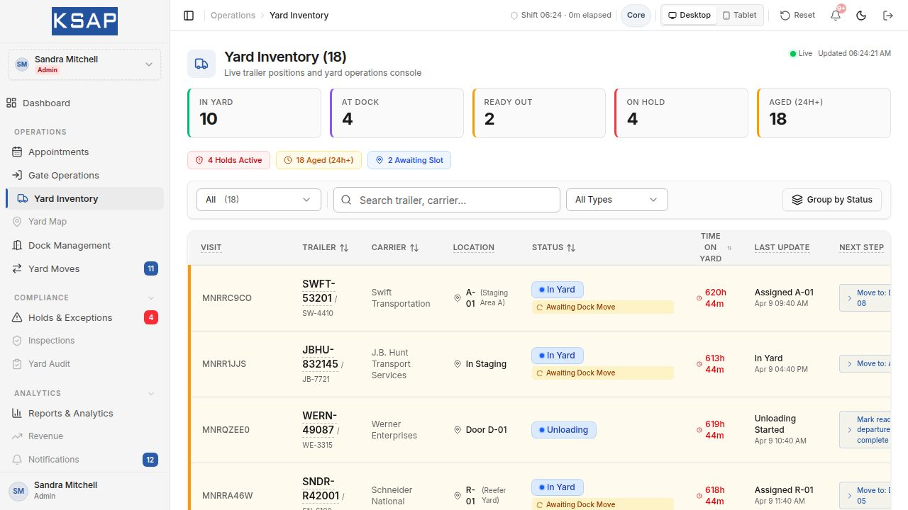
Fig 9.1 — Yard Inventory: live trailer list with status, location, carrier, dwell time, and next-step actions.
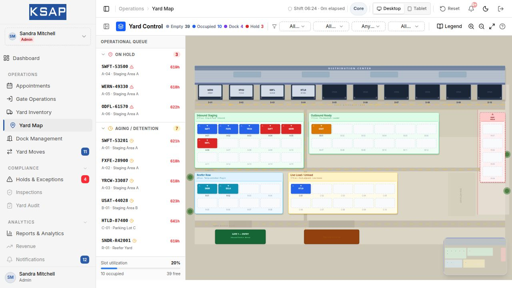
Fig 9.2 — Yard Map: interactive SVG-based map showing all zones, slots, dock doors, and gate status.
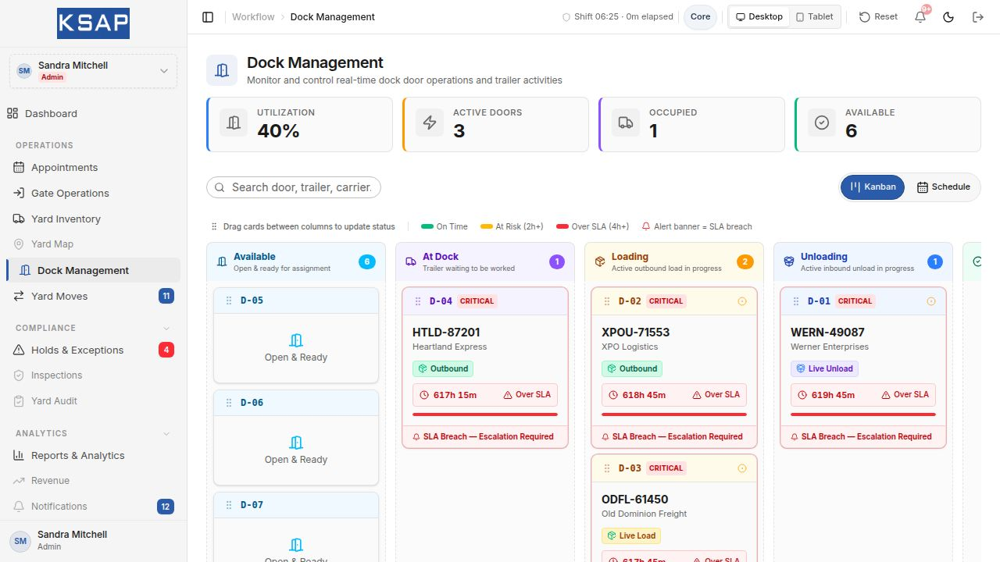
Fig 9.3 — Dock Management: Kanban board (Available → At Dock → Loading → Unloading → Complete) with SLA timers.
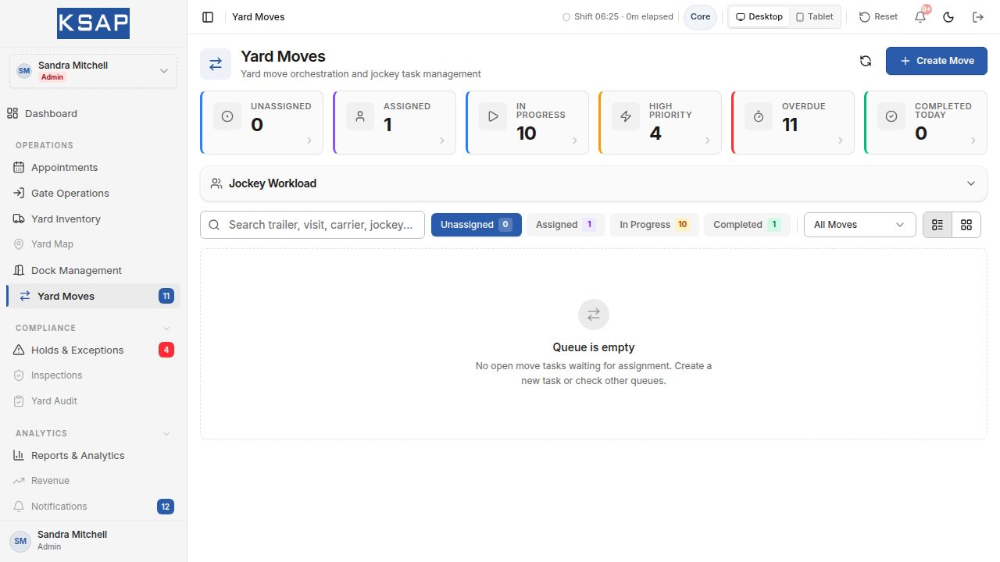
Fig 9.4 — Yard Moves: jockey task queue with assignment, in-progress, priority, and overdue counts.
Yard Inventory
Live table of all trailers currently in the yard. Columns: Visit #, Trailer #, Carrier, Location (zone + slot/dock), Status, Time on Yard, Last Update, Next Step quick action. Status badge shows In Yard, At Dock, Unloading, Loading, On Hold, Ready Out. Aged trailers (24h+) flagged in red. Group-by-Status toggle collapses rows into visual buckets. Alert chips at top surface holds, aged counts, and trailers awaiting slot assignment.
Yard Map
Interactive SVG canvas showing the physical facility layout. Zones are colour-coded: Staging Area A (inbound), Staging Area B (outbound), Reefer Yard, Hazmat Isolation, Parking Lot C. Each slot shows trailer SCAC code when occupied. Left sidebar shows operational queue sorted by time-on-yard. Top bar filters by zone, movement type, and status. Filter, zoom in/out, and fullscreen controls. Legend panel describes colour scheme.
Dock Management
Kanban board with 10 dock doors across 5 columns (Available, At Dock, Loading, Unloading, Completed). Each card shows trailer #, carrier, movement type, and SLA timer coloured green (on time), amber (at risk 2h+), red (over SLA 4h+). Critical-breached cards display a red "SLA Breach — Escalation Required" banner. Drag-and-drop cards between columns to update door status. Schedule view alternative to Kanban. 40% utilisation KPI shown in header.
Yard Moves
Task management console for yard jockeys. KPI strip shows Unassigned, Assigned, In Progress, High Priority, Overdue, and Completed Today counts. Tasks can be filtered by status tab and searched by trailer/carrier/jockey. Cards show move type, trailer, from/to location, priority level, and elapsed time. Jockey Workload section collapses/expands per-driver task lists. Managers can create moves manually via "+ Create Move" button.
Yard Zone Configuration (Seed Data)
| Zone | Code | Type | Total Slots | Description |
|---|
| Hazmat Isolation | HAZ | Hazmat | 4 | Isolated hazmat-rated parking zone |
| Parking Lot C | PKG-C | Parking | 10 | Overflow and long-term bobtail parking |
| Reefer Yard | RFR | Reefer | 8 | Temperature-controlled trailer parking |
| Staging Area A | STG-A | Staging | 15 | Primary inbound staging near Gate 1 |
| Staging Area B | STG-B | Staging | 12 | Secondary staging for outbound preparation |
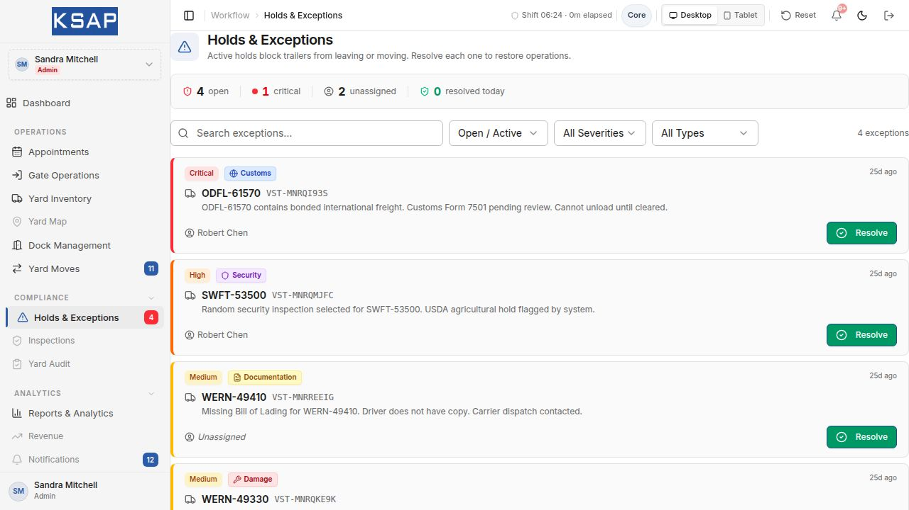
Fig 10.1 — Holds & Exceptions: prioritised exception list with severity badges, type chips, and one-click resolution.
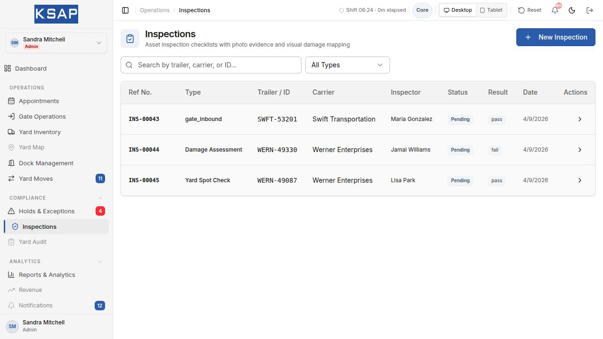
Fig 10.2 — Inspections: structured checklist inspections with pass/fail result, inspector assignment, and date.
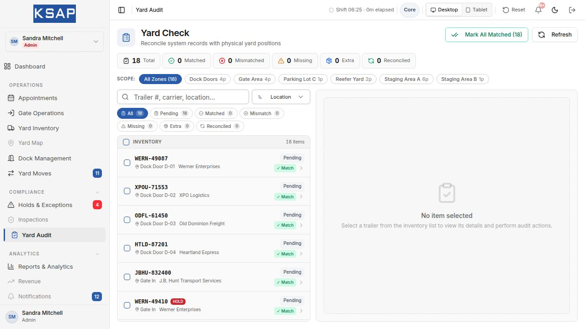
Fig 10.3 — Yard Check: physical audit reconciliation tool — match, mismatch, or flag as missing/extra against system records.
Holds & Exceptions
Centralised exception management. Types include: Manual Modification, Late Arrival, Documentation Hold, Security Hold, Damage Hold, Seal Mismatch, Driver Issue, Customs Hold. Severities: Critical, High, Medium, Low. Each exception links to a visit and can be assigned to a staff member. Filter by status (Open/Active, Resolved), severity, and type. Resolve button sends PATCH to /api/exceptions/:id/resolve. Exception count displayed as red badge in sidebar.
Exception Auto-Creation Triggers
| Trigger | Type Created | Severity |
|---|
| Gate guard modifies driver name, truck, or trailer at check-in | Manual Modification | High (if trailer #), else Medium |
| Truck arrives past appointment time window | Late Arrival | Medium |
| Dock SLA timer breaches 4-hour threshold | SLA Breach | High |
| Trailer marked damaged at gate check-in | Damage Hold | Medium |
| Trailer condition "Needs Inspection" at gate | Inspection Required | Low |
Inspections
Structured asset inspection module supporting multiple inspection types: Gate Inbound, Damage Assessment, and Yard Spot Check. Each inspection has a reference number (INS-XXXXX), linked trailer, assigned inspector, status (Pending/In Progress/Completed), result (Pass/Fail), and timestamp. The detailed form provides a checklist of inspection items, photo attachment points mapped to trailer hotspot views (front, rear, driver side, passenger side, interior, roof), and optional exception linkage.
Yard Audit (Yard Check)
Physical inventory reconciliation tool. Operators walk the yard and match physical trailer positions against system records. Each inventory item can be marked Matched, Mismatched (wrong slot), Missing (in system but not found), or Extra (found but not in system). Scope filters narrow to specific zones or dock areas. "Mark All Matched" button for rapid clean-yard certification. Results update audit records and can trigger corrective move tasks for mismatches.
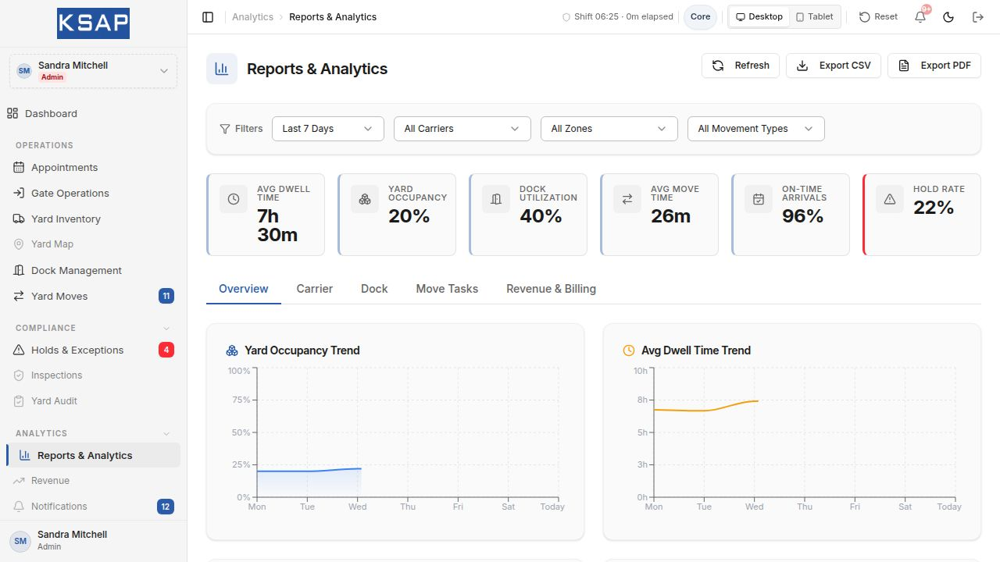
Fig 11.1 — Reports & Analytics: multi-tab dashboard with KPI strip, trend charts, and CSV/PDF export.
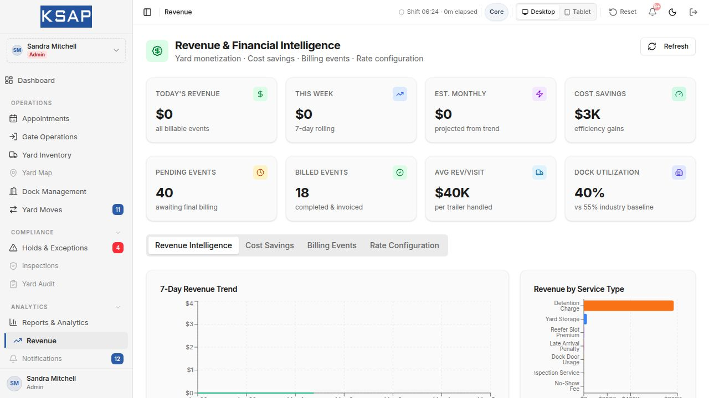
Fig 11.2 — Revenue Intelligence: billing event tracking, cost savings, dock utilisation, and rate configuration.
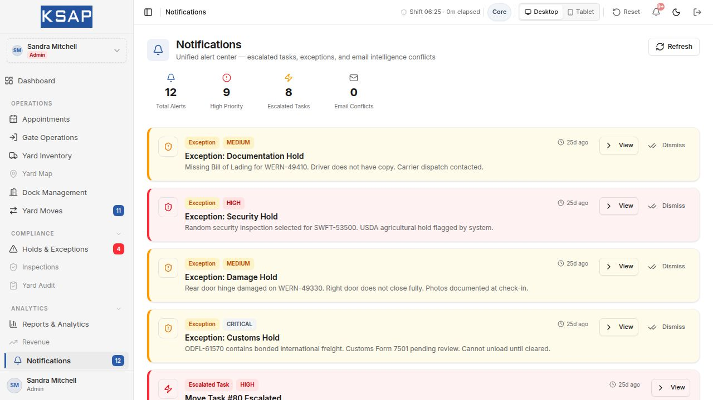
Fig 11.3 — Notifications: unified alert centre combining exceptions, escalated tasks, and email intelligence conflicts.
Reports & Analytics
Multi-tab analytics dashboard with global filters (time range, carrier, zone, movement type). Tabs: Overview, Carrier, Dock, Move Tasks, Revenue & Billing. Header KPIs: Avg Dwell Time, Yard Occupancy %, Dock Utilisation %, Avg Move Time, On-Time Arrivals %, Hold Rate %. Charts include Yard Occupancy Trend and Avg Dwell Time Trend (Recharts line charts). Export CSV and Export PDF buttons available in the header.
Revenue & Financial Intelligence
Four sub-tabs: Revenue Intelligence, Cost Savings, Billing Events, Rate Configuration. KPIs: Today's Revenue, This Week Revenue, Est. Monthly Revenue, Cost Savings, Pending Events, Billed Events, Avg Rev/Visit, Dock Utilisation. Revenue by Service Type bar chart. Revenue types tracked: Detention Charge, Yard Storage, Reefer Slot Premium, Late Arrival Penalty, Dock Door Usage, Inspection Service, No-Show Fee.
Notifications
Unified alert centre aggregating all system-generated events. Shows Total Alerts, High Priority count, Escalated Tasks count, and Email Conflicts count. Each notification has a type badge (Exception, Escalated Task, Email Conflict), severity badge (Critical, High, Medium), a description, and a timestamp. Actions: View (navigates to source record) and Dismiss. Bell icon in top nav shows live unread count badge.
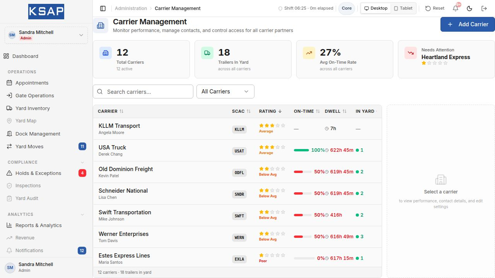
Fig 12.1 — Carrier Management: performance scorecards, SCAC codes, on-time rates, and dwell times per carrier.
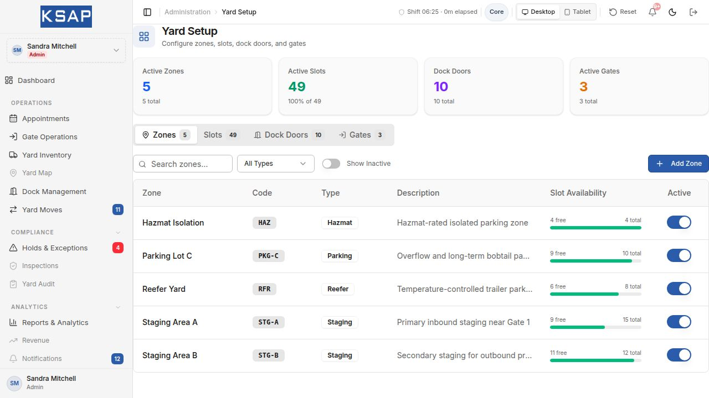
Fig 12.2 — Yard Setup: zone, slot, dock door, and gate configuration with active/inactive toggles.
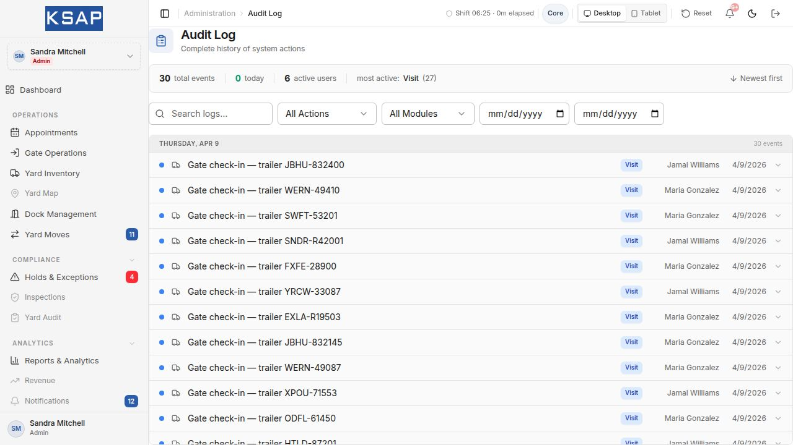
Fig 12.3 — Audit Log: complete timestamped history of all system actions grouped by date, filterable by action type, module, and date range.
Carrier Management
All 12 registered carrier partners. Columns: Carrier name, SCAC code, Star rating, On-time %, Avg dwell time, Trailers currently in yard. Right panel shows detailed profile, contact info (name, email, phone, address), and performance history when a carrier is selected. Carriers flagged as "Needs Attention" are highlighted in the header. Admins can add carriers, edit contacts, set brand colour, and deactivate carriers.
Yard Setup
Four tabs — Zones, Slots, Dock Doors, Gates. KPIs show totals and utilisation for each entity type. Zones tab lists all zones with code, type, slot availability bar, and active toggle. Each zone can be created or edited inline. Slots tab shows individual slot numbers, zone assignment, type, and capacity. Dock Doors tab shows 10 doors (D-01 through D-10) with type and current status. Gates tab shows 3 gates (Gate 1–3) with type (Entry/Exit/Bi-directional).
User Management
Table of all users with avatar, name, email, role badge, active status, and inline role-change dropdown. Filterable by role and status. Admins can reassign roles on the fly — change takes effect on next login. System supports 12 demo users spanning all 6 roles.
Audit Log
Immutable chronological record of all system actions. Each entry shows action description (e.g. "Gate check-in — trailer JBHU-832400"), module badge (Visit, Appointment, Exception), actor name, and timestamp. Filterable by action type, module, and date range. 30 total seed entries. Most active entity type is Visit (27 events). Supports "Newest first" / "Oldest first" sort.
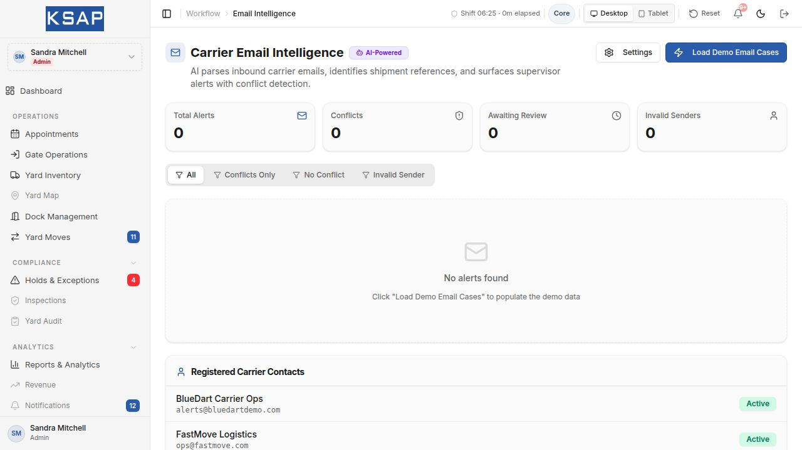
Fig 13.1 — Carrier Email Intelligence: AI-parsed inbound emails, conflict detection, and registered carrier contacts.
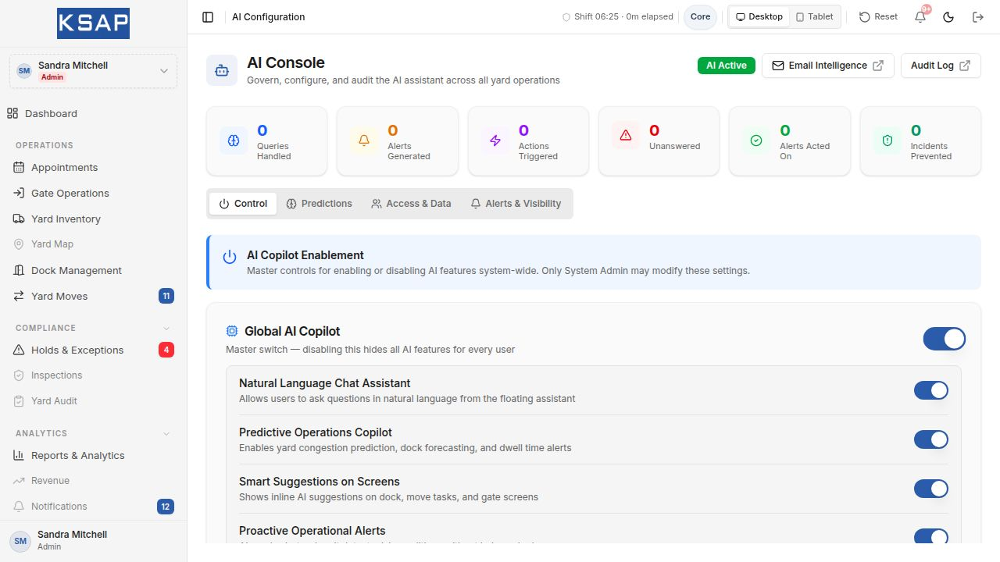
Fig 13.2 — AI Console: master switches, predictions, access controls, and alert configuration.
AI Chat Assistant
Floating assistant panel (bottom-right) available in Elevate and Enhanced modes. Powered by OpenAI GPT-5.1 via Replit AI Integrations. Uses SSE streaming so responses appear word-by-word. Has system context about the current yard state (carriers, appointments, exceptions). Supports natural language queries: "How many trailers are aged?", "Which dock is over SLA?", "Create a move task for SWFT-53201".
Carrier Email Intelligence
Parses inbound carrier emails using GPT to extract shipment references, detect ETAs, and flag conflicts between email content and scheduled appointments. Conflict categories: Conflicts Only (schedule discrepancy detected), No Conflict (clean parse), Invalid Sender (unregistered email domain). Registered carrier contacts list maintained for known sender matching. Supervisor alerts generated for unresolved conflicts.
AI Configuration Console
Admin-only console for governing all AI features. Master switch disables/enables AI globally. Sub-switches: Natural Language Chat Assistant, Predictive Operations Copilot, Smart Suggestions on Screens, Proactive Operational Alerts. Tabs: Control, Predictions, Access & Data, Alerts & Visibility. Usage KPIs: Queries Handled, Alerts Generated, Actions Triggered, Unanswered, Alerts Acted On, Incidents Prevented.
Predictive Alerts (Enhanced)
- Yard congestion predictions based on appointment density
- Dock bottleneck forecasting from historical dwell patterns
- Aged-trailer escalation alerts at 24h, 48h, and 72h thresholds
- Carrier on-time risk scoring for upcoming arrivals
Gate Guard
US-GG-001
As a Gate Guard, I want to search for an incoming truck by appointment number, trailer number, or driver name, so that I can quickly identify their record without manually paging through a list.
Acceptance: Auto-complete suggestions appear from today's expected trucks. Search returns matching appointments. Empty result offers Walk-In option.
US-GG-002
As a Gate Guard, I want to verify a driver's identity by collecting their name, CDL last 4 digits, USDOT, and SCAC code, so that I can ensure the right carrier and driver are entering the facility.
Acceptance: Fields grouped in labelled sections. CDL field only accepts 4 numeric digits. SCAC auto-uppercases. Mismatches vs. appointment shown with amber indicator.
US-GG-003
As a Gate Guard, I want to flag a reefer trailer and record its set temperature, so that the reefer yard can prepare the correct temperature-controlled slot.
Acceptance: Reefer toggle reveals temperature input. Value stored in visit notes. Reefer temp shown on gate pass and done-screen badge.
US-GG-004
As a Gate Guard, I want to document trailer condition at check-in (Good / Damaged / Needs Inspection) with optional notes, so that pre-existing damage is recorded before the trailer enters the facility.
Acceptance: Condition selector shows three clearly labelled options. Selecting Damaged or Needs Inspection reveals a notes input. Condition stored in visit record.
US-GG-005
As a Gate Guard, I want to attach a Bill of Lading document (PDF or image) during check-in, so that shipment documentation is captured at the gate and linked to the visit record.
Acceptance: File picker accepts PDF, JPG, PNG. Selected filename shown with green confirmation. Filename stored in visit notes. Remove button available.
US-GG-006
As a Gate Guard, I want to print a gate pass immediately after check-in, so that the driver has official authorisation to enter the facility.
Acceptance: Print dialog opens in a new window. Pass includes visit number, carrier, driver, trailer/truck, movement type, check-in time, USDOT, SCAC, reefer temp (if applicable), and two signature lines.
US-GG-007
As a Gate Guard, I want a simplified full-screen Guard Mode interface, so that I can process check-ins efficiently on a gate kiosk without navigating the full application UI.
Acceptance: Guard Mode shows only search field and walk-in button. Black header bar with current time and Exit button. Auto-activated for gate_guard role on first session.
Yard Manager / Admin
US-YM-001
As a Yard Manager, I want to see real-time KPIs on the dashboard (yard inventory, utilisation, holds, aged trailers, overdue moves), so that I can assess operational health at a glance without pulling reports.
Acceptance: Dashboard KPIs refresh every 60 seconds. Aged trailer and hold counts show in red when non-zero. Action Required panel lists items needing immediate attention.
US-YM-002
As a Yard Manager, I want to resolve holds and exceptions from a single screen, so that I don't need to navigate to individual visit records to clear blockers.
Acceptance: Exceptions list shows type, severity, description, and assignee. One-click Resolve button sends PATCH request. Exception disappears from Open list and moves to Resolved.
US-YM-003
As a Yard Manager, I want to view and filter the appointment calendar by movement type and date range, so that I can anticipate traffic volume and staff accordingly.
Acceptance: Calendar supports Day, Week, Month views. Colour legend for movement types. Slot conflict indicator visible. Filter by carrier and movement type available.
US-YM-004
As a Yard Manager, I want to see carrier performance metrics (on-time rate, dwell time, star rating), so that I can make informed decisions about carrier relationships.
Acceptance: Carrier Management shows on-time % bar, dwell time, in-yard count, and star rating for each carrier. Clicking a row opens detail panel with contact info.
US-YM-005
As a Yard Manager, I want to export operations reports as CSV or PDF, so that I can share performance data with stakeholders outside the system.
Acceptance: Reports page has "Export CSV" and "Export PDF" buttons. CSV downloads a data file. PDF triggers print dialog. Both respect active filters.
Yard Jockey
US-YJ-001
As a Yard Jockey, I want to see my assigned move tasks with clear source and destination locations, so that I can move trailers efficiently without radio calls to confirm positions.
Acceptance: Moves queue shows from/to location, trailer number, carrier, priority, and elapsed time. My tasks are grouped under "Jockey Workload".
US-YJ-002
As a Yard Jockey, I want to view the interactive yard map to locate a specific trailer by slot position, so that I don't waste time driving around searching.
Acceptance: Yard map shows occupied slots with trailer SCAC label. Operational queue on left side shows trailers sorted by urgency. Filtering by zone reduces the visible area.
Dock Operator
US-DO-001
As a Dock Operator, I want to update dock door status by dragging a card on the Kanban board, so that yard and gate staff always know which doors are available without me making phone calls.
Acceptance: Cards drag between Available, At Dock, Loading, Unloading, and Completed columns. Status update fires API call. SLA timer starts when card moves to At Dock.
US-DO-002
As a Dock Operator, I want to see SLA breach alerts on dock cards, so that I can escalate or prioritise operations before penalty thresholds are exceeded.
Acceptance: Timer turns amber at 2h, red at 4h. "Over SLA" badge appears. "SLA Breach — Escalation Required" banner shown on card. Exception auto-created.
WF-01 — Full Inbound Trailer Lifecycle
1
Appointment Created
Yard Manager or carrier creates appointment via /appointments. Reference number auto-generated. Status: Scheduled.
Yard ManagerAdmin
2
Carrier Confirms
Carrier confirms via Carrier Portal. Status changes to Confirmed. Appears in Expected Today on gate check-in screen.
Carrier
3
Gate Check-In
Guard searches appointment, verifies identity & credentials, records load details (seal, reefer, condition, BOL), submits check-in. Visit record created. Gate pass printed. Status: Checked In.
Gate Guard
4
Slot Assignment
From the done screen, guard or manager assigns trailer to an available yard slot. Jockey receives move task automatically or manually.
Gate GuardYard Manager
5
Yard Move Executed
Yard jockey picks up task from Yard Moves queue, locates trailer via yard map, spots it to assigned slot, marks task complete.
Yard Jockey
6
Dock Assignment
Dock operator or manager drags trailer card from Available to At Dock on Kanban board. SLA timer starts. Status: At Dock.
Dock UserYard Manager
7
Unloading
Dock operator drags card to Unloading column when work begins. Timer continues. Status: Unloading.
Dock User
8
Ready Out
Once unloading complete, trailer marked Ready Out in yard inventory. Appears in Expected Check-Outs on gate check-out screen.
Dock UserYard Manager
✓
Gate Check-Out
Guard finds visit, verifies unit, checks clearance (no holds), confirms exit. Visit status set to Completed. Billing events created for detention if applicable. Visit removed from live inventory.
Gate Guard
WF-02 — Walk-In (Unscheduled Arrival)
!
No Appointment Found
Guard searches and finds no matching appointment. Walk-In button selected.
2
Identity Verification
Guard manually enters all driver, carrier, and vehicle data. No mismatch detection (no appointment to compare against).
3
Load Details
Standard load detail form completed. Walk-In badge displayed on the form card.
✓
Visit Created & Walk-In Count Incremented
Visit created with no appointment linkage. Walk-Ins KPI on gate check-in incremented. Remainder of workflow same as scheduled arrival.
WF-03 — Exception Resolution
!
Exception Created
Auto-created (late arrival, discrepancy, SLA breach, damage) or manually raised by staff.
2
Notification Sent
Exception appears in Notifications centre and sidebar badge. High-priority exceptions appear in Action Required panel on Dashboard.
3
Supervisor Review
Yard Manager opens Holds & Exceptions, reviews details, assigns to staff member if needed.
Yard Manager
4
Corrective Action
For holds: affected trailer remains in yard. Guard or manager may re-verify documents, contact carrier, or await customs clearance.
✓
Exception Resolved
Manager clicks Resolve. Exception status updated to Resolved. Trailer hold lifted. Daily resolved count incremented. Audit log entry created.
WF-04 — Yard Audit
1
Initiate Audit
Manager opens /yard/audit. System generates a checklist of all 18 current inventory items.
2
Physical Walk
Operator physically walks each zone. For each trailer found, selects "Match" if in correct slot.
?
Discrepancy Detected
If trailer not found → marked Missing. If trailer found in wrong slot → marked Mismatched. If unknown trailer found → marked Extra.
✓
Audit Completed
Results summary shows matched/mismatched/missing/extra counts. Corrective move tasks auto-created for mismatches. Audit record saved.
Legend: ✅ Full Access | RO Read Only | — No Access
| Module / Action |
| Dashboard & Navigation |
| Dashboard (view) | ✅ | ✅ | ✅ | ✅ | ✅ | — |
| AI Assist Banner (Elevate+) | ✅ | ✅ | — | — | — | — |
| Notifications (view) | ✅ | ✅ | ✅ | ✅ | ✅ | — |
| Appointments |
| View appointments | ✅ | ✅ | — | — | — | RO |
| Create appointment | ✅ | ✅ | — | — | — | — |
| Edit / Cancel appointment | ✅ | ✅ | — | — | — | — |
| Gate Operations |
| Gate Check-In (process) | ✅ | ✅ | ✅ | — | — | — |
| Gate Check-Out (process) | ✅ | ✅ | ✅ | — | — | — |
| Guard Mode access | ✅ | ✅ | ✅ | — | — | — |
| Fast Lane mode | ✅ | ✅ | ✅ | — | — | — |
| Print gate pass | ✅ | ✅ | ✅ | — | — | — |
| Place hold at gate | ✅ | ✅ | ✅ | — | — | — |
| Yard Operations |
| Yard Inventory (view) | ✅ | ✅ | ✅ | ✅ | ✅ | — |
| Assign slot to trailer | ✅ | ✅ | ✅ | — | — | — |
| Yard Map (view & interact) | ✅ | ✅ | — | ✅ | — | — |
| Create move task | ✅ | ✅ | ✅ | — | — | — |
| Execute / update move task | ✅ | ✅ | — | ✅ | — | — |
| Dock Management Kanban | ✅ | ✅ | — | — | ✅ | — |
| Compliance |
| View exceptions | ✅ | ✅ | — | — | — | — |
| Resolve exceptions | ✅ | ✅ | — | — | — | — |
| Create inspections | ✅ | ✅ | ✅ | — | ✅ | — |
| View inspections | ✅ | ✅ | ✅ | — | ✅ | — |
| Yard Audit | ✅ | ✅ | — | — | — | — |
| Analytics |
| Reports & Analytics | ✅ | ✅ | — | — | — | — |
| Export CSV / PDF | ✅ | ✅ | — | — | — | — |
| Revenue Intelligence | ✅ | ✅ | — | — | — | — |
| Audit Log | ✅ | ✅ | — | — | — | — |
| Administration |
| Carrier Management | ✅ | ✅ | — | — | — | — |
| Yard Setup (zones/slots/docks) | ✅ | — | — | — | — | — |
| User Management / Role Change | ✅ | — | — | — | — | — |
| Email Intelligence | ✅ | ✅ | — | — | — | — |
| AI Configuration Console | ✅ | — | — | — | — | — |
| AI Chat Assistant | ✅ | ✅ | — | — | — | — |
| Feature |
| Gate Operations |
| Multi-step check-in (Search → Verify → Load → Assign → Pass) | ✅ | ✅ | ✅ |
| CDL Last 4 / USDOT / SCAC capture | ✅ | ✅ | ✅ |
| Reefer temperature recording | ✅ | ✅ | ✅ |
| Trailer condition capture + BOL upload | ✅ | ✅ | ✅ |
| Gate pass printing | ✅ | ✅ | ✅ |
| Guard Mode kiosk | ✅ | ✅ | ✅ |
| Fast Lane mode | ✅ | ✅ | ✅ |
| Auto-exception on late arrival / discrepancy | ✅ | ✅ | ✅ |
| Yard & Dock |
| Yard Inventory live table | ✅ | ✅ | ✅ |
| Interactive Yard Map | ✅ | ✅ | ✅ |
| Dock Kanban + drag-and-drop | ✅ | ✅ | ✅ |
| SLA timers and escalation alerts | ✅ | ✅ | ✅ |
| Move task creation and assignment | ✅ | ✅ | ✅ |
| Dock scheduling calendar | ✅ | ✅ | ✅ |
| Compliance |
| Hold & exception management | ✅ | ✅ | ✅ |
| Inspection checklists + photo evidence | ✅ | ✅ | ✅ |
| Yard audit reconciliation | ✅ | ✅ | ✅ |
| Audit log (immutable) | ✅ | ✅ | ✅ |
| Analytics |
| Reports (Overview, Carrier, Dock, Moves, Revenue) | ✅ | ✅ | ✅ |
| CSV / PDF export | ✅ | ✅ | ✅ |
| Revenue & Billing Intelligence | ✅ | ✅ | ✅ |
| AI Capabilities |
| AI Chat Assistant (GPT-5.1 streaming) | — | ✅ | ✅ |
| AI Dashboard brief / Operational summary | — | ✅ | ✅ |
| Smart suggestions on dock / appointment screens | — | ✅ | ✅ |
| Proactive congestion & dwell-time alerts | — | ✅ | ✅ |
| Carrier Email Intelligence (inbox parsing) | — | — | ✅ |
| Automated exception creation via AI | — | — | ✅ |
| ROI & cost savings panel | — | — | ✅ |
| Truck lifecycle animated explainer video | — | — | ✅ |
| AI Configuration Console | — | ✅ | ✅ |
| Term | Definition |
|---|
| BOL | Bill of Lading — legal shipping document listing cargo contents, origin, and destination. Captured at gate check-in. |
| CDL | Commercial Driver License — mandatory licence for operating large trucks. System captures last 4 digits only for privacy. |
| DC / Distribution Centre | A warehouse facility that receives inbound trailers, processes goods, and dispatches outbound trailers. |
| Detention | A charge levied against a carrier when their trailer exceeds the free dwell-time allowance at a facility. |
| Dwell Time | Total time a trailer spends at the facility from gate check-in to gate check-out. |
| Exception | Any deviation from normal operations: late arrivals, discrepancies, holds, SLA breaches, or damage events. |
| Gate Pass | Printed authorisation document issued to a driver after successful check-in. Contains visit number, trailer/truck details, and signature lines. |
| Guard Mode | Stripped-down full-screen UI mode for gate kiosk stations, optimised for fast processing and minimal distraction. |
| Hold | A status placed on a trailer that prevents it from being moved or checked out until the hold is resolved (e.g. documentation, customs, security). |
| Jockey | Informal name for a yard spotter — a driver who moves trailers within the yard using a yard truck (also called a hostler). |
| KPI | Key Performance Indicator — a quantitative metric used to measure operational performance. |
| Live Load/Unload | A movement type where a truck stays connected to the trailer while it is being loaded or unloaded, rather than dropping the trailer in a slot. |
| Move Task | A work order assigned to a jockey to physically move a specific trailer from one location to another within the yard. |
| Reefer | Refrigerated trailer. Set temperature is recorded at gate check-in and the trailer is assigned to the temperature-controlled Reefer Yard zone. |
| SCAC | Standard Carrier Alpha Code — a 2–4 letter identifier assigned to transportation companies by the National Motor Freight Traffic Association. |
| SLA | Service Level Agreement — a time-based commitment for dock operations. Breach thresholds: At Risk at 2h, Over SLA at 4h. |
| Slot | A numbered parking position in the yard where trailers are staged when not at a dock door. |
| USDOT | United States Department of Transportation number — a unique identifier assigned to commercial motor carriers by the FMCSA. |
| Visit | A single gate-to-gate event representing one trailer's stay at the facility. Created at check-in, closed at check-out. |
| Walk-In | An unscheduled trailer arrival with no prior appointment in the system. Processed as a walk-in visit. |
| YMS | Yard Management System — software that manages and optimises trailer and vehicle movements within a logistics facility. |
| Zone | A named physical area of the yard with a specific function: Staging Area A (inbound), Staging Area B (outbound), Reefer Yard, Hazmat Isolation, Parking Lot C. |
Document Maintained By: YardNow Engineering & Product Team ·
Last Updated: May 2026 ·
Version: 2.0 ·
Applies To: YardNow platform build commit 690f72cf and later
YardNow — Yard Intelligence Platform | Confidential & Proprietary | All rights reserved